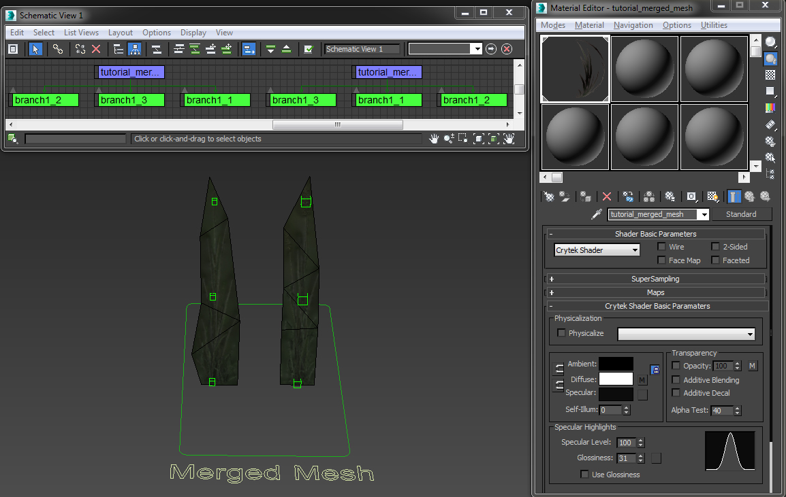
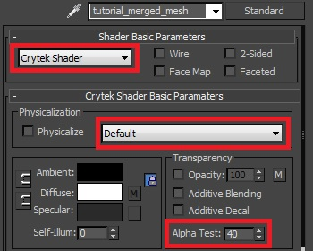
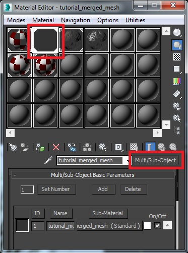
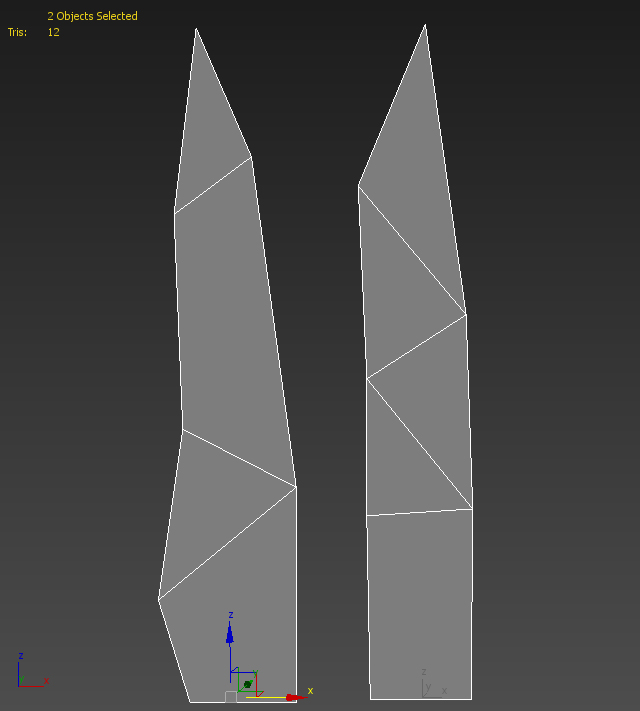
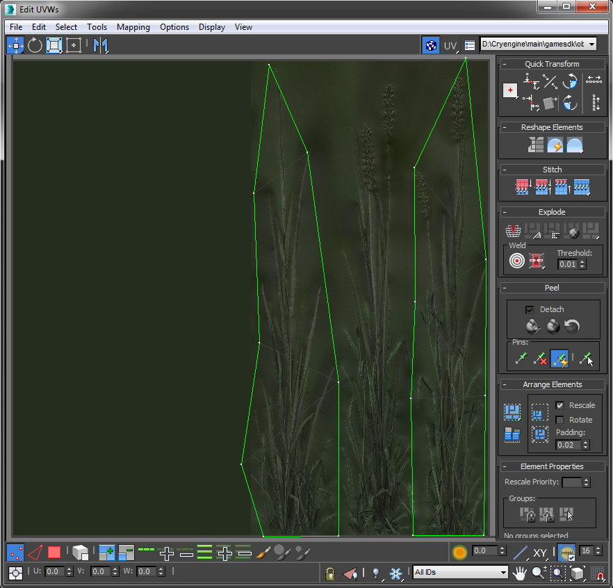
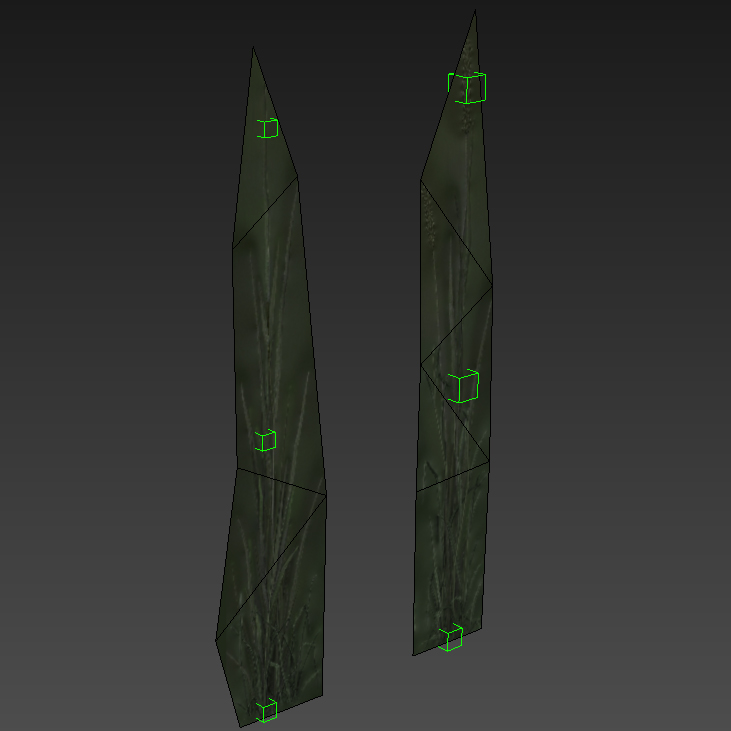
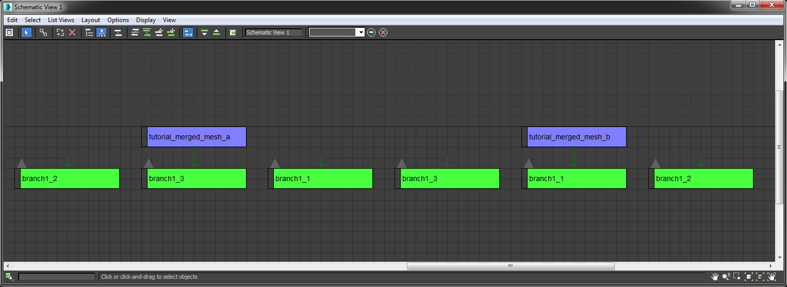
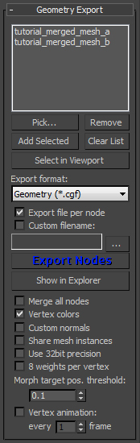
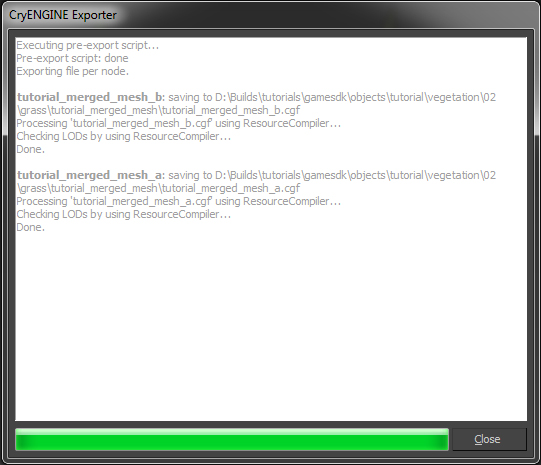

Обзор
В этом уроке мы будем использовать нашу систему объединенной сетки и покажем вам процесс настройки гибких травинок. Объединенные сетки в основном используются для обработки областей с густым количеством объектов растительности, таких как большие поля с травой. Объединенные сетки также позволяют использовать эффект изгиба на основе веревки. Веревки генерируются для каждого экземпляра актива, который сгибается при ударе.
В отличие от установок, основанных на костях, таких как Touch Bending, веревки могут быть дешевле и подвергаться воздействию глобального ветра и нашей системы генерации бриза. Большие поля травы являются прекрасным примером для демонстрации этого типа технологии, поскольку каждый экземпляр актива может быть объединен в более крупные кластеры с помощью системы объединенной сетки. Итак, в этом уроке мы создадим два простых ресурса плоскости травы в качестве основы для густо заросшего травяного поля.

Рис. 1: Поле с густой травой, подверженное воздействию ветра.

Рис2: 2 ресурса, которые содержит все это травяное поле.
Учебные файлы
Исходная сцена 3dsMax с экспортированными файлами CRYENGINE:
Предварительные требования для этого урока
Прежде чем продолжить изучение этого руководства, обязательно прочтите и усвойте следующие темы;
- Как установить CryMaxTools
- Основной рабочий процесс CRYENGINE 3dsMax
- CRYENGINE Экспортер
- Масштаб единиц измерения 3dsMax соответствует системе единиц измерения CRYENGINE
Полезная информация
При работе над активом обязательно помните о следующих вещах:
- Выровняйте манекены по геометрической поверхности; привязка к отдельным вершинам не требуется.
- Чтобы распознать объединенные сетки, чайникам необходимо следовать правилам соглашения об именовании объединенных сеток.
- Не масштабируйте и не сбрасывайте XForm своих манекенов.
- Полезно сохранять как можно меньшее количество различных материалов для объединенных сеток, чтобы снизить потребление памяти консольными системами. Используйте один большой лист текстур, содержащий несколько вариантов.
- Сохраняйте геометрию простой и плоской.
- Прокси-серверы коллизий не нужны, поэтому не создавайте собственные.
- Для консолей травинки должны быть как можно более низкополигональными, чтобы гарантировать, что им не придется передавать и объединять большие объемы данных сетки. Вы также можете отключить для них цвета вершин при экспорте, чтобы еще больше уменьшить размер.
- Вам не нужно создавать LOD для активов, использующих эту систему. Технология Merged Meshes объединяет растительность в 16-метровые ячейки, которые сами определяют уровень детализации, удаляя элементы по мере удаления камеры от «сектора».
В объединенных сетках есть некоторые улучшения, но есть и некоторые недостающие функции по сравнению с Touch Bending. В этой таблице представлен обзор различий между этими двумя системами. Используйте это, чтобы решить, какой тип функции лучше всего подходит для вашего актива.
| Описание | Объединенная сетка | Сенсорный изгиб |
|---|---|---|
| Тип гибки | Веревки | Кости |
| Объединение экземпляров в кластеры | Да | Нет |
| Под влиянием ветра | Да | Нет |
| Под влиянием гена Breeze | Да | Нет |
| Требуется упрощенная геометрия (малое количество полигонов) | Нет | Да |
| Поддержка родителей в области костей | Нет | Да |
| Поддержка прокси | Нет | Да |
| UV создание экземпляров костей | Нет | Да |
Первоначальная настройка 3dsMax
В этом уроке мы будем создавать наш ресурс в следующем каталоге.
<Your_Project>\Assets\Objects\tutorial\vegetation\02\grass\merged_mesh\
Итак, для начала сохраните максимальную сцену в этом месте. Все наши экспортированные активы будут сохранены там. Некоторые из текстур, которые мы используем, взяты из уже существующего ресурса, и мы укажем вам каталог, где они находятся позже в этом уроке.
Мы продолжим исходить из предположения, что вы уже создали актив, поскольку это не учебник по моделированию 3dsMax. Мы начнем с подготовки ресурса для CRYENGINE, назначения SubIds соответствующим полигонам и настройки материала.

Рис3: 3dsMax обзор готовой модели.
Материал
Сначала мы настроим материал для объекта. В 3dsMax откройте Material Editor, и создать новый Мульти-SubObject материал с одним SubId позвонил tutorial_merged_mesh
Несмотря на то, что мы используем один материал SubID, лучше, если вы будете следовать стандартному соглашению со всеми другими нашими настройками активов, используя материал Multi-SubObject.
Загрузите свою диффузную карту, которая должен содержать альфа-канал для непрозрачности.
Файл примера относится к следующей учебной текстуре:
<>Your_Project>\Assets\objects\tutorial\vegetation\02\grass\merged_mesh\tutorial_merged_mesh_diff.tif

Рис3а: Настройка параметров шейдера
В SubID за материал:
- Выберите Крайтек Шейдер.
- В Физическая реализация раздел, не делай проверьте Физически флажок.
- В следующем раскрывающемся списке выберите По умолчанию.
- Установить Альфа-тест до 40.
Экспортируйте материал
Теперь мы настроили материал для объекта с его стандартными свойствами.
- Убедитесь, что в редакторе материалов выбран правильный материал.
- И вы находитесь на корневом уровне материала (не внутри SubID).
- В CRYENGINE экспортер, нажмите кнопку Создать материал кнопка. Сохраните это в том же каталоге, что и объект:
<Your_Project>\Assets\Objects\tutorial\vegetation\02\grass\merged_mesh\tutorial_merged_mesh.mtl>

Рис.4. Выберите материал для экспорта и убедитесь, что вы находитесь на верхнем уровне, а не внутри SubID.
Геометрия
Наша геометрия для этого урока будет представлять собой два участка травинок. Имейте в виду, что мы разместим несколько сотен тысяч экземпляров этих двух ресурсов по всей нашей сцене, поэтому следите за тем, чтобы количество треугольников было как можно меньшим.
Создайте сетки
Создайте одноплоскостную сетку для вашего первого участка травы, разделите форму на аналогичную конфигурацию многоугольника (и присвойте ID1) и примените к ней только что созданный материал (tutorial_merged_mesh.mtl). Используйте Развернуть UVW модификатор, позволяющий настроить его оболочку UV так, чтобы она помещалась только вокруг одного из участков травы на текстуре. Создайте копию своей сетки и переместите ее оболочку UV на другой участок травы через другой. Развернуть UVW модификатор (см. Рис5 и Рис6).
Адаптируйте форму обеих сеток к примененным к ним текстурам. Наконец, назовите два объекта травы следующим образом:
- tutorial_merged_mesh_a
- tutorial_merged_mesh_b

Рис5: Геометрия участков травы.

Рис.6: UV Макет обеих сеток травы в 3dsMax. Обратите внимание, что UV-развертки травы соответствуют базовой текстуре.
Добавление манекенов-помощников
Далее давайте добавим манекены, чтобы наша трава могла гнуться на ветру. Нам необходимы манекены, чтобы определить начальную, среднюю и конечную точку нашей веревочной цепи. Создайте три фиктивных объекта для обоих активов. Выровняйте их по поверхности и разместите примерно внизу, в середине и в конце геометрии травы.
Используя то же соглашение об именах, что и в системе Touch Bending, назовите манекены следующим образом:
- branch1_1 - нижняя манекен
- branch1_2 - средний манекен
- branch1_3 - верхний манекен
Обратите внимание, что нам не нужно щелкнуть манекены точно на вершину, как в установке сенсорного изгиба. Вы можете, если хотите, но это не требуется системой Merged Mesh.

Рис.7: Геометрия участков травы с выровненными манекенами.
Затем откройте вид «Схема» и свяжите оба набора манекенов с соответствующей геометрией. Убедитесь, что правильная цепочка ветвей связана с правильной геометрией, поскольку здесь мы имеем дело сразу с двумя активами.

Рис.8: Схематическое изображение иерархии активов.
Экспортируйте геометрию
Теперь мы готовы экспортировать нашу геометрию в движок. В CRYENGINE экспортер:
- Добавьте корневой узел актива в список экспорта. В данном случае это называется tutorial_merged_mesh (а и б).
- Выбрать Геометрия (*.cgf) из Экспорт раскрывающийся список формата.
- Нажмите кнопку Экспорт узлов кнопка.

Рис9: Добавление актива в экспортер

Рис10: Успешный экспорт
Продолжить CRYENGINE
Мы завершили настройку 3dsMax части руководства. Чтобы продолжить, перейдите на следующую страницу, где мы настраиваем материал и используем Растительность Инструмент для размещения некоторых из этих активов объединенной сетки.